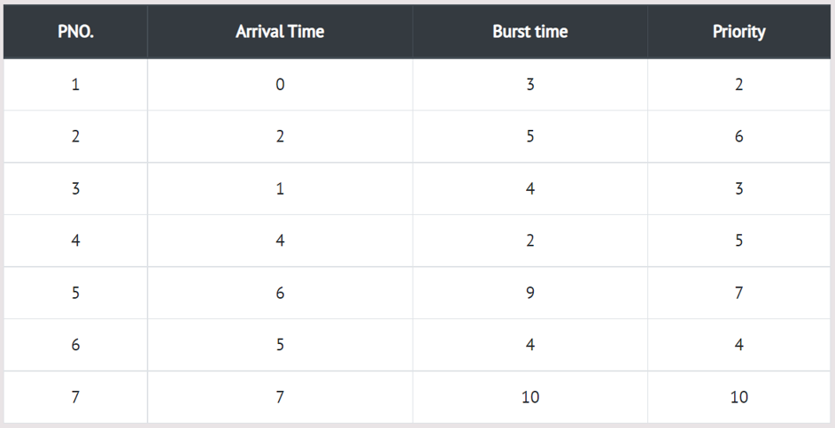

In this type of scheduling method, the CPU has been allocated to a specific process. The process that keeps the CPU busy, will release the CPU either by switching context or terminating. It is the only method that can be used for various hardware platforms. That's because it doesn't need special hardware (for example, a timer) like preemptive scheduling.
In the Example, there are 7 processes P1, P2, P3, P4, P5, P6 and P7. Their priorities, Arrival Time and burst time are given in the table.
Step 0) The Process P1 arrives at time 0 with the burst time of 3 units and the priority number 2.
Since No other process has arrived till now hence the OS will schedule it immediately.
Step 1) Meanwhile the execution of P1, two more Processes P2 and P3 are arrived. Since the priority
of P3 is 3 hence the CPU will execute P3 over P2.
Step 2) Meanwhile the execution of P3, All the processes get available in the ready queue. The Process
with the lowest priority number will be given the priority. Since P6 has priority number assigned as 4
hence it will be executed just after P3.
Step 3) After P6, P4 has the least priority number among the available processes, it will get
executed for the whole burst time.
Step 4) Since all the jobs are available in the ready queue hence All the Jobs will get executed
according to their priorities. If two jobs have similar priority number assigned to them,
the one with the least arrival time will be executed.
The Turnaround time and the waiting time are calculated by using the following formula.
Turn Around Time = Completion Time - Arrival Time Waiting Time = Turnaround time - Burst Time